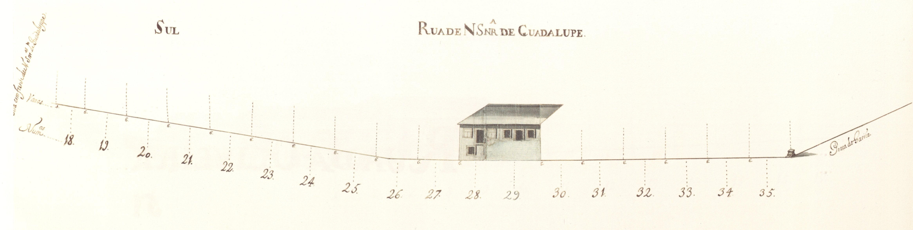

Rua de Nossa Senhora de Guadalupe - Vista norte.
Rua de Nossa Senhora de Guadalupe - Vista sul
50 |
Rua de Nossa Senhora de Guadalupe |
Rua de Nossa Senhora de Guadalupe - Vista norte. |
|  Rua de Nossa Senhora de Guadalupe - Vista sul |
Rua íngreme, pertencente ao complexo urbanístico do campo Novo, ligava a Capela de Guadalupe à praça do Gavião.
Aberta também em 1725, tinha já, nesta data, quase todas as suas casas construídas, no lado Norte. Eram simples, na sua grande maioria de um só piso, e que, contrariamente à rua de S. Gonçalo, se estendiam pela encosta acima, até à rua em Frente de Nossa Senhora de Guadalupe.
Na parte Sul estavam apenas construídas 2 habitações, sensivelmente no meio da rua, na parte plana. Eram edifícios de 2 pisos, em pedra, mas de desenho tradicional. Infelizmente o desenho está um pouco destruído, cortando todo o piso térreo da casa do prazo n.º 9 e um pouco da do anterior.
Todas as 17 casas aqui apresentadas são prazos do Cabido.
Ainda hoje é denominada rua de Guadalupe.
| Número | Enfiteuta | Foro | Descrição |
| 1 e 2 | D. Agostinha Maria de Barros Gavião, enfiteuta principal do prazo do casal dos Chãos ou Quinteiro. | «Chãos de casas» do prazo do casal dos Chãos ou Quinteiro. O chão n.º 1 confronta, do poente, com o chão n.° 26 da Praça do Gavião. | |
| 3, 4, 5 e 6 | D. Agostinha Maria de Barros Gavião, enfiteuta principal do prazo do casal dos Chãos ou Quinteiro. | Pertencem ao casal dos Chãos ou Quinteiro. Nos livros dos prazos do cabido não se encontram escrituras de subemprazamento. | |
| 7 | D. Agostinha Maria de Barros Gavião, enfiteuta principal do prazo do casal dos Chãos ou Quinteiro. | Ursula Vieira, e suas irmãs, Vitoriana Josefa e Joana Antónia, pagam 1200 reis ao enfiteuta do prazo do casal dos Chãos ou Quinteiro, à face do qual foi subemprazada em 1745. | |
| 8 | D. Agostinha Maria de Barros Gavião, enfiteuta principal do prazo do casal dos Chãos ou Quinteiro. | António Gomes, pedreiro, casado com Ana Gomes, paga 1200 reis ao enfiteuta do prazo do casal dos Chãos ou Quinteiro, à face do qual foi subemprazado em 1725. | |
| 9 a 17 | D. Agostinha Maria de Barros Gavião, enfiteuta principal do prazo do casal dos Chãos ou Quinteiro. | Luís Cardoso Coutinho de Oliveira, casado com Antónia José Leonor de Vasconcelos, paga 7800 reis ao enfiteuta do prazo do casal dos Chãos ou Quinteiro, conforme o subemprazamento de 1740. Ao prazo pertencem, ainda, os n.° 1 a 6 da rua em frente de N. Sra. de Guadalupe. Os n.° 9 e 10, encontram-se unidos desde o ano de 1725. À face da escritura do ano de 1740 foram feitos títulos subalternos das casas n.° 14, 15, 16 e 17. | |
| 18 a 27 | D. Agostinha Maria de Barros Gavião, enfiteuta principal do prazo do casal dos Chãos ou Quinteiro. | «Chãos de casas» do prazo do casal dos Chãos ou Quinteiro. O chão n.° 18 confronta, do nascente, com a rua em frente de N. Sra. de Guadalupe. | |
| 28 e 29 | D. Agostinha Maria de Barros Gavião, enfiteuta principal do prazo do casal dos Chãos ou Quinteiro. | Pertencem ao casal dos Chãos ou Quinteiro, a cujo enfiteuta se paga foro. Nos livros dos prazos do cabido não se encontram escrituras de subemprazamento. | |
| 30 a 35 | D. Agostinha Maria de Barros Gavião, enfiteuta principal do prazo do casal dos Chãos ou Quinteiro. | «Chãos de casa» do prazo do casal dos Chãos ou Quinteiro. O n.° 35 confronta, do poente, com o n.° 27 da Praça do Gavião. |